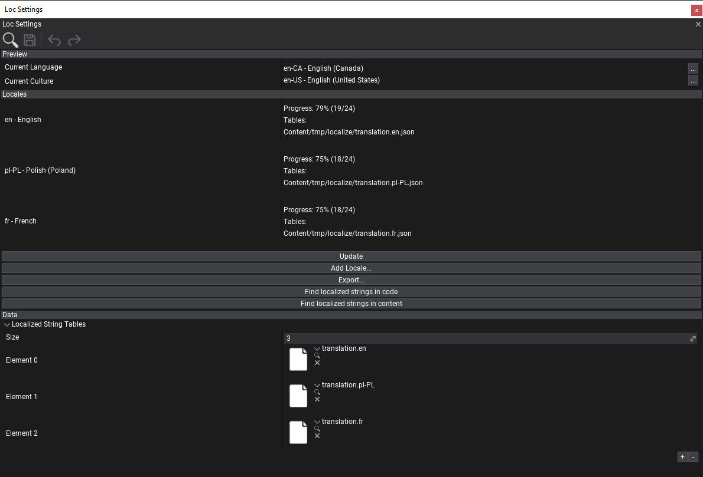
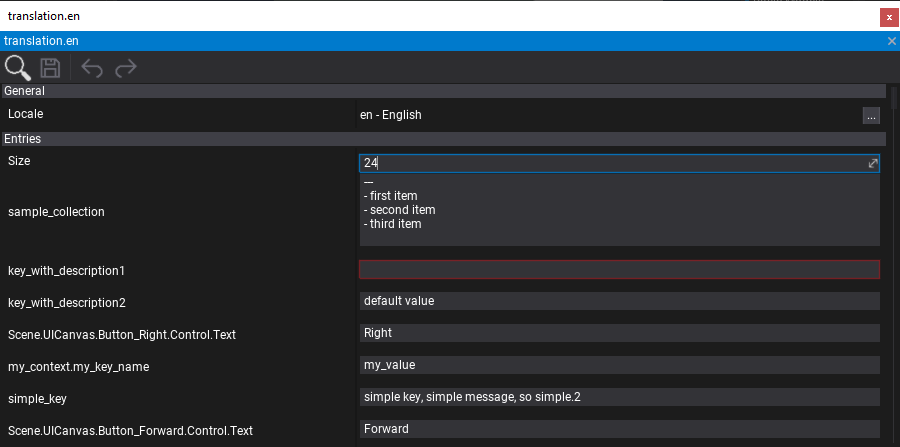
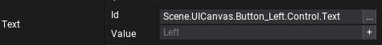
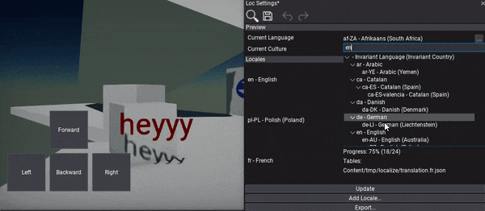

Localization
Flax contains a wide range of tools for games localization and internalization. This includes UI language localization, values culture (numbers, currency and date formatting) and creating translation for different languages. Follow this documentation section to learn how to translate your games for different languages.
Flax supports all cultures and implements CultureInfo type for both C++ and C# (RFC 4646).
Localization Settings

Localization Settings is a json settings asset that contains localization configuration and is added to Game Settings. It's a root dashboard for a game translation.
To create it use Content window, right-click and select New -> Settings. Then specify name, select type Localization Settings and confirm (tutorial).
Editor sections
- Preview - current language and culture for in-game preview.
- Locales - list of supported localizations by a game. Each locale is defined by one or more Localized String Table assets. Dashboard displays the translation progress per-language and lists all used tables (double-click on table name to navigate to it in Content window).
- Data - raw-asset editor (list of used string tables for direct editing).
Dashboard
Locales section offers language translation overview and contains a set of buttons for additional actions:
- Update - refreshes the dashboard statistics.
- Add Locale... - shows a culture picker and creates new localization for it with not translated string tables.
- Export... - exports the localization strings into
.potfile for translation. Exported file contains all used keys for localization. Can be used to create.pofiles with translation for importing back to the project. - Find localized strings in code - searches for localized string usage in inside a project source files.
- Find localized strings in content - searches for localized string usage in inside a project content files (scenes, prefabs).
Workflow
Example workflow for using localization during game production.
1) Levels and UI setup - game developers create game maps and setup UI (on scenes or in prefabs). Various game objects and assets contains UI display strings. Programmers use LocalizedString type for texts (in scripts/assets) that will be localized in future.
2) Localization setup - add new localization settings to the project. Setup Locales that will be used in game (include default en language).
3) Mark localizable texts - use Localized String editor + button to generate localized string entry for all used UI texts.
4) Find localized string - use dashboard to find all localized strings in code and assets. It won't add duplicates but just new entries.
5) Export - export all localized string keys to .pot file for translation.
6) Translate - perform translation of all used texts (in external tool or by editing string table assets).
7) Import translations - import back translated .po files as Localized String Table (Localization Settings contains list of used tables)
8) Test - verify that translations are working fine. Use language preview utility to change language.
Depending on game production size and team experience the localization can be performed very early during production or later in production. Whatever works best for you.
Localized String Table

LocalizedStringTable is an asset in json format that stores a list of localization texts for a given locale. It supports plural and multiline entries. Empty fields are highlighted with red outline to mark them as missing (need translation).
Flax supports importing translated strings from .po files into Localized String Table asset. Simply drag&drop it into Content window. To learn more about PO format see this documentation.
Localized String

Localized String is scripting type for easy texts localziation. It contains two fields: Id and Value. Id is the localized string identifier, Value is custom overriden text value (if Value is set, the Id won't be used).
In Editor Id textfield contains utility button that shows a localized string picker from the Localization Settings. If Value field is empty then it will display watermark of the current text from the localization. You can also manually set Value. By using + button on the right side of the Value textfield you can add the text to the localization settigns for all locales in project (the inserted value will be passed to default en locale, rest of the cultures will have empty, missing text translation).
LocalizedString is supported in both C++ and C# scripting API and can be used for texts localization instead of raw String type. It supports implicit conversion between in-built string type and can be serialized or deserialized.
Localization and Culture
Localization contains scripting API for string localization gather and implements values formatting handling for current culture.
var myStr = Localization.GetString("localized_id", "Fallback value");
var myStrPlural = Localization.GetPluralString("localized_id_n", 2, "Count: {}");
var number = string.Format("{0:n}", 1234);
Changing current language
Localization contains scripting API for changing current display language for game and current culture for values formatting.
Editor Preview
Use Localization Settings asset editor dashboard for current language preview.

using System.Globalization;
Debug.Log("Current language: " + Localization.CurrentLanguage);
Debug.Log("Current culture: " + Localization.CurrentCulture);
Localization.LocalizationChanged += () => { Debug.Log("Localization changed!"); };
Localization.SetCurrentLanguageCulture(new CultureInfo("en-US"));